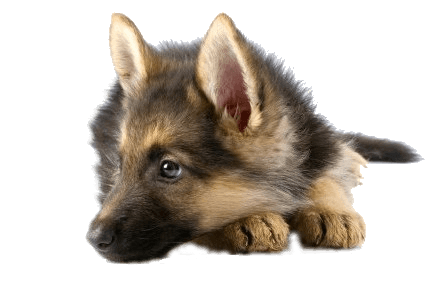
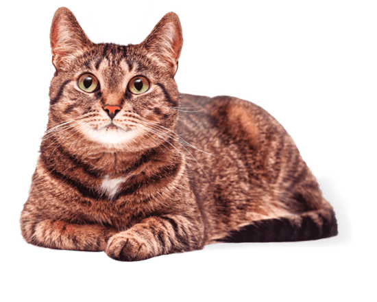

ONG
Ayuda a un peludo

El trabajo de esta fundación está centrado en el bienestar animal, centrado principalmente en perros y gatos abandonados, independiente de su edad o estado de salud. Sus líneas de trabajo son el rescate, la rehabilitación y la adopción. ¿Quiénes trabajan en Ayuda a un peludo? Por una causa en común, profesionales de distintas áreas trabajan para ayudar a nuestros amigos de cuatro patas a sanarse y a encontrar un hogar. lkadjsdsldsdhofjdfnkjdjfdhjfdjfjdhfdjfdfdhfjdfjdhfkjdhfkjdhfkjdhfkdhfkjdhfkdhfkdhfkdhfkdhfkdhfkdhfk djdlfjhdlkfjdfhkjdfhkjdfjkdfkjdhfkjd dfjdkdkfldjf dfjdkdkfldjfdf
Nuestros integrantes
- Byron Diaz - Cargo N1: Rescatador de animales en terreno
- Gustavo Valenzuela - Cargo N2: Secretario
- Valentina castro - Cargo N3: Veterinaria especializada en animales domesticos